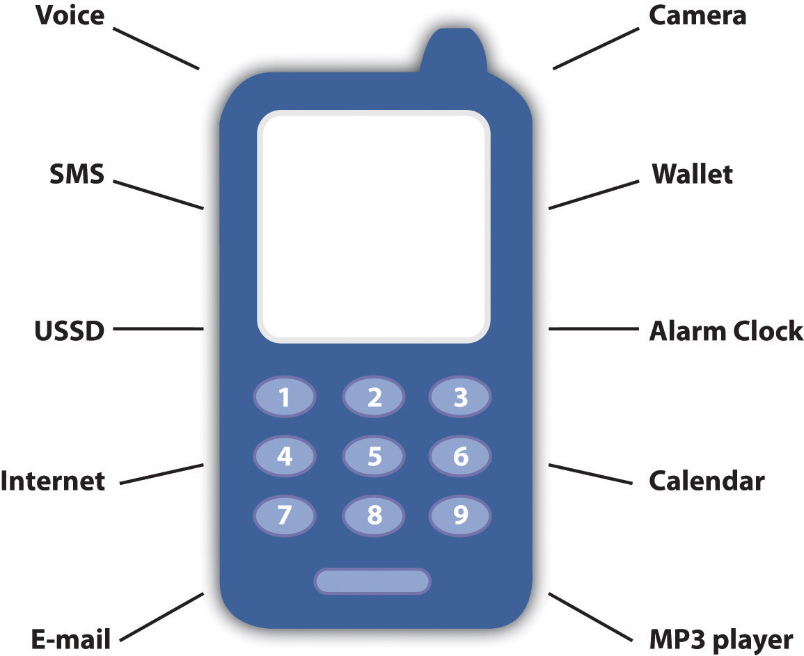
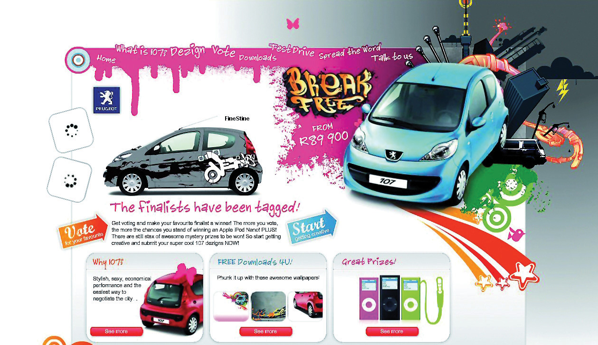

The mobile phone is a small gadget that has had a huge impact on our day-to-day lives. It has already had a profound impact on the way we communicate and conduct ourselves daily. This continues to be felt as the mobile phone enables new ways to market and new markets in which to transact.
The Internet transformed our world in two fundamental ways: it has given anyone with access to the Internet the opportunity to interact easily with others (and with companies and brands), and through search, it has made information easily available. Content and information have become readily and freely available. Developed as a platform for academics to share information, the Web has a strong ethos of free content.
Mobile phones are a developing technology, which means that new and better features are being packed into ever smaller devices, adding to the interactivity and searchability of the Internet with several fundamental features native to the mobile phone and the way we use it.
While the Internet and the personal computer have had a profound impact on the world we transact in, it is the mobile phone that presents an exciting opportunity for even more of the world to access the benefits of these inventions.
Consider that there are 1.7 billion people worldwide with access to the Internet. Of those, 1.3 billion are active users of e-mail. With the world’s population at 6.7 billion, that’s almost a fifth of the population who can be reached by e-mail. That needs to be compared to 4.1 billion mobile phone subscribers—more than half of the world’s population. And of that 4.1 billion, 3 billion were active users of short message service (SMS) text messaging in 2007.Tomi Ahonen, Tomi Ahonen Almanac 2010: The Mobile Telecoms Industry Annual Review, http://www.tomiahonen.com/ebook/almanac.html (accessed May 11, 2010); Mocom2020, “4.1 Billion Mobile Phone Subscribers Worldwide,” March 27, 2009, http://www.mocom2020.com/2009/03/41-billion-mobile-phone- subscribers-worldwide (accessed December 17, 2009).
Looking at figures like that, it’s obvious why so many organizations are investigating the mobile phone as a marketing platform.
The mobile phone is a sophisticated device. Today’s phones can act as alarm clocks, cameras, video recorders, MP3 players, calendars, notebooks, and messaging devices, and they can even make voice calls. However, it is not the aforementioned plethora of features that makes the mobile phone such an attractive device. The following seven features are what turn mobile phones into something truly remarkable for marketers:
If you consider your relationship with your mobile phone, these features should make sense. However, a few facts and figures never hurt anyone, and the following elaborates more fully on the aforementioned features.
A 2006 survey found that 63 percent of respondents would not share their phones with anyone (90 percent of those surveyed in Japan would not share their phones).“Wireless Works,” BBDO and Proximity, April 2006. While laptops do present a personal connection to the Internet, they are not as personal a device as the mobile phone.
The implication for marketers is that respect for privacy and permission is exceptionally important in all aspects of marketing, and particularly so when it comes to mobile phones.
What do you take with you when you leave your house? Wallet, keys, and mobile phone. What do you keep always near you when you are in your house? Mobile phone. According to 2007 research by Morgan Stanley, 91 percent of mobile phone owners keep their phone within three feet, twenty-four hours a day.Tomi Ahonen, “Deeper Insights into the 7th Mass Media Channel, Mobile Is to the Internet, What TV Is to Radio,” Communities Dominate Brands, May 2, 2008, http://www.communities-dominate.blogs.com/brands/2008/05/deeper-insights.html (accessed December 15, 2008). People have their phones with them at all times of the day, even in the bathroom.
The implication for marketers is that messages sent to recipients can be read and acted on immediately. Unlike, for example, e-mail, which requires that the recipient be in front of his or her computer and connected to the Internet, messages sent to mobile phones will most likely be accessed within minutes of being received.
In order to fulfill its primary function—as a telephone—the mobile phone is always on. Messages and services can be sent and acted on at all times of the day.
As with the previous feature of the phone, the fact that the phone is always on has implications for marketers; it changes the services and messages that can be developed for the phone. It also means that marketers need to be perhaps even more sensitive with their marketing communications. Not many people would appreciate a short message service (SMS)Electronic messages sent on wireless networks. at four in the morning informing them of a special offer.
This is perhaps the key feature of the mobile phone and one reason why content for mobile phones in many areas generates as much or more revenue than content for the Internet. Every mobile phone has a built-in payment mechanism—the subscriber identity module (SIM) card. Billing is easily handled through the user’s mobile networkThe facilities and technology that make a public mobile telecommunications service possible.. Not only do mobile phones have this built-in payment mechanism, but also paying for content and downloads has been built into the way that consumers use their phones. There is less of an expectation that goods and services will be free, although as the mobile app market expands, this is changing.
There are also a number of services that turn the mobile into a virtual wallet or bank card, bringing banking and payment services to people all around the world.
iChannel, a mobile news ticker feed in Japan, generates US$192 million per year in subscriptions for its US$2-a-month service. It has more paying subscribers on this single service that all online newspapers in the world combined.Alan Moore, “The Glittering Allure of the Mobile Society,” white paper, SMLXL, November 2008, http://andrewgrill.com/download/AlanMoore_Allure_Mobile _Society.pdf (accessed December 3, 2008). Similar cases can be made for games, music, and other mobile content.
The implication for marketers is that consumers are willing to pay for services and content on their mobile phone. Advertising is not the only way to generate revenue for content.
As the mobile phone is always carried and always on, it is always available as a creative tool. Phones today feature a number of tools that let users act on creative impulse, from taking photos and videos, to becoming a scribbling pad on which to jot down ideas.
The implication for marketers is that these features can be used to encourage interactivity with campaigns created for mobile phones. It presents the mobile phone as a useful tool in viral campaigns based on consumer-generated content.
Accurate measurement is not available in all countries due to network guidelines.
While the Internet is vastly superior to other media in its ability to track and measure advertising and marketing campaigns, it is eclipsed by the mobile phone. Every transaction made on a mobile phone can be uniquely tracked to that mobile phone number, whether the transaction is a voice call, an SMS message, or accessing the Internet.
The implication for marketers is that aggregated data provide extensive profiling and segmenting opportunities for targeting the right audience. Campaigns can also be accurately measured and tracked for ROI (return on investment). Bear in mind as well that this accurate measurement means that mobile phone users have far less anonymity than Internet users. Even though at least 50 percent of mobile phones worldwide are on a prepaid or pay-as-you-go type of contract (which means that the network operatorsA function that operates on or modifies other functions. do not have the phone user’s name and demographic details to go with the mobile number), each transaction made by the phone user can still be measured.
The Mobile Marketing Association has an in-depth glossary of mobile marketing terminology available as a free download from its Web site, http://www.mmaglobal.com.
This represents emerging thinking on the benefits of the mobile phone. Because of the nature of the mobile phone to be able to accurately track transactions to any particular phone number (user), it can track transactions between mobile numbers (between users). This means that sophisticated data mining can identify patterns that indicate information about and preferences of mobile phone users. Not only can alpha users be identified, but they may also be identified within their social context.
The implication for marketers is that this information will represent rich data that can be used to both create and market products, content, and services online.
The mobile phone is a feature-packed gadget used all around the world by almost half the world’s population. However, as much as the mobile phone has a number of unique benefits, it does come with its own challenges.
The mobile phone is small. This means that it has a small screen and a small keypad. While some phones have a full QWERTYA full keypad like the one found on computers. keypad, many have the standard numeric keypad. When it comes to the mobile Web, consider that phones do not have a mouse. There are a few models that have touch screens, but for the most part, navigation of the mobile Web is through the keypad or scroll buttons on the phone.
Mobile phones are also even less standard than PCs. Not only do phone models present a myriad of screen sizes, there are also several operating systems and browsers that are used by mobile phones.
Use of more advanced features of phones can require an extensive education process. While mobile phones have a host of features, these devices are for the most part underused.
There are seven reasons that turn mobile phones into great eMarketing tools:
There are three categories of mobile phones.
Basic phonesThese are standard handsets that can make and receive voice calls, send and receive text messages, and make use of USSD services. can make voice calls, send and receive SMS (short message service) messages and make use of USSD (unstructured supplementary services data)Works on all existing GSM (Global System for Mobile Communications) phones. Provides session-based communication, enabling a variety of applications..
Feature phonesThese are handsets that offer additional functionality and often include a camera and additional storage space. Often they can access the Internet, but they generally have a standard numeric keypad. offer features additional to a basic phone, including cameras and increased storage, as well as the ability to access the Internet. Feature phones usually have a standard numeric keypad.
QWERTY refers to a full keypad like the keyboard of a computer.
SmartphonesHandsets with advanced capabilities that allow users to add applications to their phones. They usually have a QWERTY keypad and include 3G and Wi-Fi capabilities. offer advanced capabilities and features over feature phones, notably allowing users to add applications to their phones. These phones run a full-featured operating system; most have 3GThird generation of mobile communications systems. 3G networks enable network operators to offer users a wider range of more advanced services while achieving greater network capacity. (third-generation) as well as Wi-FiAny of a family of wireless local area network (LAN) data standards (IEEE 802.11) used fairly ubiquitously for corporate and home connectivity. Also available as hotspots in public areas such as cafes and airport terminals, either for free or for a one-time-use charge or subscription fee. (wireless-fidelity) capabilities and generally have a QWERTY keypad.
Note that there is not yet an industry-standard definition of a smartphone, and many feature phones are now being developed with technology similar to smartphones. Smartphones tend to have bigger screens than feature phones.
Figure 16.1 Features of a Mobile Phone
Just as the Web is used in a myriad of ways as a marketing, advertising, and distribution channel, so is the mobile phone. There are a number of technologies available to reach a mobile audience. Some of the most prevalent are detailed further.
Mobile phones started as literally phones that are mobile (thank you again, Captain Obvious). Before we look at mobile phones as devices used to access the World Wide Web, to take photographs, or to make payments, we need to address their primary function: communication. The primary use of a mobile phone is to enable communication, either through voice calls or through messages. Messaging services on a mobile phone use either short message service (SMS) to send text messages or multimedia message service (MMS)An extension on SMS (short message service); allows picture, sound, or low-quality videos to be sent on a wireless network. to send graphics, audio, photos, and video as well as text. Messages can, of course, also be sent via e-mail depending on the phone’s features.
Do u find it tricky to transl8 txt msgs? http://www.transl8it.com translates from text speak into everyday English and back again.
Short message service (SMS) supports messages of about 160 characters in length, though it is possible to string several messages together to send longer messages. Messages can be sent from one phone to another, or from a PC to a phone and vice versa.
SMS also supports a service known as common short codes (CSCs)Short phone numbers to which users send text messages, usually to get something in return (e.g., a competition entry).. CSCs are phone numbers (short ones, as the name implies) to which users can send a text message from a mobile phone, usually to get something in return. CSCs can be used to sign up for services, to enter competitions, or to indicate permission (or to end permission) to receive marketing messages. Messages sent to CSCs can also be used to make a payment or a donation, with a set amount being deducted from a user’s prepaid airtime or monthly airtime bill.
Metropolitan Life, a South African insurance company, launched a new service called Cover2Go in 2007. Cover2Go is aimed at those on lower incomes in South Africa and has made innovative use of mobile phone technology in order to reach its target market. Cover2Go insurance can be purchased by SMS; a single transaction can purchase instant life insurance for six days.
All a customer needs to do to purchase coverage is to SMS their name and identity number to a premium-rate CSC. The system, powered by Clickatell, replies with a confirmation and policy number, requests the name of a beneficiary, and reminds the policyholder to inform an associate about the life insurance. All this costs the customer only about $1, which is automatically deducted from the phone’s airtime and gives him six days’ worth of coverage.
Cover2Go’s innovative use of mobile phone technology makes insurance incredibly accessible to this market. The use of SMS technology ensures that the insurance is easy to purchase, and deducting the cost of the coverage from the phone’s airtime makes it easy to pay for the insurance.
You can access the Cover2Go and Clickatell Web sites at http://www.cover2go.co.za and http://www.clickatell.com, respectively.
With twice as many SMS users worldwide as e-mail, SMS should be a no-brainer for marketers. However, mobile phone users have proved reluctant to hand over their phone number for marketing messages, perhaps fearing a similar deluge of spam for which e-mail has such a poor reputation.
This is changing to some extent, with the prevalence of CSCs being used in marketing and advertising campaigns. As consumers are so comfortable with using text messages for their communication, no extensive education process is required to have consumers access marketing campaigns based on CSCs.
CSCs can be used to receive messages from consumers and to send messages to consumers. CSCs can be either dedicated (used by one company and presumably for one campaign) or shared. When CSCs are shared, keywords in the text message are used to separate the messages. There are two standard keywords that should always elicit a standard response:
Another standard number is the international emergency number, which is in use in most countries in the world—112.
Once prospects have given you permission to communicate with them and their mobile number, timely messages can be sent to their mobile phone. These can be promotional or sales messages, such as special offers in stores or information about upcoming events. On many phones, prospects need to at least open an SMS message in order to delete it. As well as this, mobile phones are generally kept with a prospect at all times, meaning that messages are more likely to be read very soon after they have been broadcast.
There are several ways that SMS messages can be utilized to complement an existing marketing strategy.
SMS updates can be an exceptionally useful tool for customer relationship management (CRM)A customer-focused approach to business aimed at fostering relationships with important stakeholders.. In the travel industry, hotel and airplane reservations can be sent by mobile phone, with updates being sent close to the time of travel. These short messages can include directions or details of a flight’s status.
When it comes to insurance claims or order processing, SMS updates as to the progress of a claim or order can reduce call center volume and go a long way to ensuring that a client feels valued and cared for.
SMS messages present a way to send timely sales promotion information to a large database for a relatively low cost. These can be targeted to a particular time of day when prospects are most likely to be out shopping. SMS messages can also be used when promoting events.
Despite their pithy nature—these messages have a limit of 160 characters—they can carry a strong call to action.
CSCs are often used to receive messages from prospects or customers. They provide a fast, instant, and trackable means for the public to enter competitions, voice opinions, or make requests. Even better for a company, the costs can often be passed on to the consumer, meaning that it can be a cost-effective way to receive marketing messages.
As CSCs can be shared, keywords can be used to separate communications and campaigns. For example, a user might be asked to text the word “LUXURY” to a number in order to enter a competition.
Requiring less data-entry time than entries by postcard, SMS messages to a CSC are a hassle-free way to run competitions. Entries can be almost immediately entered into a database, with fast automatic responses to ensure that the consumer knows her entry has been received. In addition, costs can be passed on to the consumer by charging entry SMS messages at premium rates.
Network and other charges mean charities do not receive the full donation.
A concept that is being taken up by the fund-raising community, text messages can be sent by donors to donate a fixed amount to a campaign. The fixed amount is deducted from the user’s airtime or added to their monthly bill.
Text messages provide an almost instantaneous way to elicit response from an audience, whether it be to a radio program, television show, newspaper or magazine advertising, or billboard. Some newspapers allow readers to send SMS messages instead of lengthy letters to the editor.
Once users have indicated their interest by sending a text message, a company can then send messages back to them. In the United Kingdom, the mobile phone network Orange ran a successful campaign around movies. All Orange customers could go the movies for half price on a Wednesday. All they had to do was text the word “MOVIE” to a particular number, and in return they would receive a unique code with which to claim their discounted tickets.
In return, Orange then sent the list of prospects who requested discounts information about the movies being shown at their local cinema. How did Orange know which was the local cinema? Simple: all it had to do was match the unique code to the number it was sent to and the cinema where it was used.David Harper, “Unfolding a Decade in Mobile Marketing,” Flytxt, July 2009, http://www.flytxt.com/Newsletter/unfolding-a-decade-in-mobile-marketing.html (accessed June 20, 2010).
There are several ways that SMS messages can be utilized to complement an existing marketing strategy:
Multimedia message service (MMS) messages are messages that contain graphics, audio, video, or images as well as text. These messages allow for richer information to be sent to prospects, but the costs are considerably higher. They use wireless application protocol (WAP)A technology platform aimed at making Web sites accessible to mobile phones, despite the small screens and keypad limitations. WAP is essentially a wireless data connection and browser that can read a pared-down version of hypertext markup language (HTML). to download rich content onto mobile phones.
MMS messages are particularly useful in viral campaigns, whether encouraging participants to use their phones to create content (photographic, audio, or video) or encouraging users to pass on content.
Because there is no standard screen size across all mobile devices, MMS messages may display differently on different phone models.
Most modern mobile phones present an array of means for connecting. As well as using the cellular network, many phones have 3G (third-generation) and Wi-Fi (wireless-fidelity) capabilities, and the ability to connect via Bluetooth or infrared.
If a user sets his Bluetooth enabled mobile phone to “discoverable,” Bluetooth devices within range of the phone can request to connect to the phone and exchange messages and data. This can be used to send location-specific marketing messages, such as discount codes in a shopping mall.
Smartphones are susceptible to receiving viruses via Bluetooth, so this is not necessarily the ideal channel to reach smartphone users.
Outdoor display advertising can be fitted to send Bluetooth messages to people within range of the advertising. The messages can contain further information to offer a richer, longer lasting experience. Note that these messages are often unexpected, so care must be taken not to be intrusive. There should be marketing collateral easily available and accessible that describes what the campaign is about.
USSD (unstructured supplementary services data) is an alternative messaging system to SMS (short message service) and is available on most GSMMost widely used of the three digital wireless-telephone technologies. Uses a variation of time-division multiple access. (Global System for Mobile Communications) networks. Unlike SMS, USSD is a protocol that allows for a query-and-response type of action between the customer and a service center, where these transactions can be seen to be similar to a session on a Web site. USSD services are usually initiated by the user who enters a code on his phone and then sends that as a request to the network. The code differs from the number an SMS is sent to because it includes the symbols # and *. For example, *100# can be used to check the balance of a prepaid service on some networks. These services are often used by networks to provide a service to a customer, such as requesting balance information, adding credit to a prepaid contract, or passing on credit to another mobile phone user. A popular service is a “call back” functionality, where a mobile phone user sends a request by USSD for another user to phone him. The requested number receives an SMS informing her of the request. Often, this SMS message also includes an advertising message.
A USSD query often initiates a session where the response from the service includes a simple text menu with further options or a response with instructions for the user. Users need to respond within a limited time frame, usually thirty seconds but up to two minutes, in order to maintain the session. If the session is not maintained, the user will need to initiate the service again. Users can select menu options by returning a message with the number of the appropriate menu selection. This continues until the appropriate content has been displayed. It is a rudimentary navigation, but with far faster response times and lower costs when compared to SMS or to mobile browsing.
USSD is being used as a payment application, turning the mobile phone into a virtual wallet.
USSD is exceptionally useful as self-service customer service and is attractive to customers when it is offered for free. Advertising can easily be displayed in the messages returned when using this service.
Voting, such as for a reality television program, and entering of competitions can all be handled through USSD. USSD services allow greater flexibility than SMS services as they allow a query-and-response type of interaction as opposed to a single message to perform these tasks. This allows the marketer to request additional information from consumers using these services.
USSD can be used to provide information to, and collect information from, customers and potential customers. However, from a marketing and advertising perspective, its adoption has not been as great as that of SMS. While USSD services are more cost effective than SMS services and can allow for more detailed data to be collected, SMS services are often preferred by the customer. SMS common short codes (CSCs) are easier to remember than USSD codes, and the concept of sending a text message is more familiar to the customer.
As much as Web sites need to cater to a number of browsers, they now need to cater to a number of devices, as more and more people are using their mobile phones, PDAs (personal digital assistants), and other mobile devices to connect to the Internet. However, visits from mobile devices are likely to be quite different from the visits from PCs. Visits from mobile phone users are likely to be more purpose driven or task specific, as opposed to leisurely browsing from PCs.
Just as with PCs, mobile phones can have different operating systems and different browsers, both affecting the way that Web sites and Web pages are viewed and used. In addition to this, Web pages are viewed on far smaller (and nonstandard) screens, and navigation is controlled through a keyboard or limited scrolling device. There are also a number of different ways that mobile phones and devices connect to the Internet. In particular, mobile phones can use the GSM (Global System for Mobile Communications) network—where access is via GPRS (General Packet Radio Service)Delivers wireless packet data services to GSM customers., EDGE (Enhanced Data Rates of GSM Evolution)A faster version of GSM (Global System for Mobile Communications) wireless service. It enables data to be delivered at rates up to 384 kilobytes per second (kbps) on a broadband connection., or 3G (third generation), depending on availability—or Wi-Fi-enabled devices can connect to wireless networks.
WAP stands for wireless application protocol and is a technology platform aimed at making Web sites accessible to mobile phones, despite the small screens and keypad limitations. WAP is essentially a wireless data connection and browser that can read a pared-down version of HTML (hypertext markup language). If a phone has only WAP access, it can only access Web sites that have been developed for this type of access.
More sophisticated phones and devices, and increasingly almost all phones sold are falling into this category, can use HTML browsers that have been specifically designed for mobile phones. These are pared-down versions of browsers that run on PCs or notebooks and have been specifically designed to take into account the limitations of mobile devices. In particular, browsers need to accommodate both the low bandwidth and the low memory capacity of mobile devices. Mobile browsers also need to cater to the navigation limitations of mobile devices as well as the fact that navigation is not standard across the various models of phones.
Chapter 13 "Web Site Development and Design" has more information on using a CSS (cascading style sheet) and W3C (World Wide Web Consortium) standards when building Web sites. If you are commissioning an agency to build a Web site for you, and mobile technology is important, ask to see what the Web site will look like without presentation markup or on a mobile phone.
When it comes to Web sites and mobile phones, there are three options for Webmasters:
For certain kinds of Web sites, there are “quick fixes” that allow a mobile version of the Web site to be created fairly easily. For example, http://mobilepress.co.za from Younique allows for Web sites and blogs based on the WordPress platform to be made mobile browser friendly. A quick search on Google will also give instructions on how to make small changes to your code in order to create a mobile friendly version of a Web site.
Some Web sites are more likely to be accessed from mobile phones than others, and savvy Webmasters can make sure that visitors have an excellent experience by building mobile versions.
As with all good Web design, the first step is in understanding users’ needs. When accessing a Web site from a mobile phone, a user is generally very task driven, time sensitive, and also likely to be location aware.
Task driven means that the user has a very specific purpose for visiting a Web site, and the Web site needs to help the user to achieve his objective with minimum fuss. For example, a user might want go to a Web site to check the score of a football game.
Time sensitive means that the user is even less likely to be able to spend time hunting for a solution to her problem; instead, the user expects to achieve tasks quickly. For example, a user en route to the airport may want to check to see if her flight is on time.
Location aware means that the location of the user often plays a large role in determining her objectives. For example, a user might be looking for restaurant suggestions in a town she is vacationing in.
These need to be factored in when creating Web sites for mobile users. Mobile Web sites need to be easy to navigate, should not contain more information than they need to, and should have services tailored to a user’s location.
Here are some tips when it comes to designing or optimizing Web sites for mobile users:
“One Web” refers to ensuring, as far as possible, that the same information and content is available to Web users, regardless of the device they are using to access the Web. So while Web sites should be optimized for presentation on various devices, proponents of “one Web” would argue that the actual content should not be different.
The W3C (World Wide Web Consortium) publishes guidelines for mobile Web standards as well as for regular Web standards. These can be accessed at http://www.w3.org/TR/mobile-bp.
Creating content and Web sites is one thing, but how do you actually get users to access them via their mobile phone?
WAP push messages are messages sent to a mobile phone that direct the user toward WAP content. While they may appear similar to SMS messages, these are a different type of message. The WAP push message contains a link that a user can follow to access WAP content.
Sending rich messages to mobile phone users can be tricky. Until there is increased general awareness of the types of messages that can be sent to and from mobile phones, MMS (multimedia message service) messages can represent a problematic push-marketing medium. However, a WAP push message can direct users to rich content, enabling a sense of user control over content viewed.
Semacode is the name of the company that developed software for reading two-dimensional (2D) bar codes. It has an application that integrates Semacode tags with Facebook. Check it out at http:// www.semacode.com.
Two-dimensional (2D) bar codes are similar to one-dimensional bar codes in that they can be scanned to access the information encoded, but 2D codes can contain a lot more information. In addition to this, with appropriate software, these codes can be photographed with a mobile phone, which then unpacks the information contained within the bar code.
Figure 16.2 The Two-Dimensional (2D) Bar Code for http://www.quirk.biz

Does that sound a little complicated? Essentially, the software that can be installed on the mobile phone turns the phone into a scanner. Information such as URLs (uniform resource locators), telephone numbers, or business names can be encoded in the bar code. When the code is scanned, the information is displayed on the phone. If this is a URL, for instance, the user can then visit that Web site without having to enter any additional information into the phone.
There are two encoding types in use: Datamatix (DM) bar codes or Quick Response (QR) bar codes. These can be open source or proprietary. The type of bar code affects the amount of information that may be stored in the bar code, while the standards used can affect the number of bar code readers that can successfully read the bar code.
2D bar codes are often also referred to as tags. These tags can be used in offline advertising and marketing campaigns to push consumers toward specific Web sites. Instead of having to remember and type in a URL, a user simply has to photograph the tag in order to visit the Web site.
Tags can be printed on billboards, on magazine pages, on t-shirts—in fact, on just about anything. The image here is the tag for http://www.quirk.biz. Download the software to your mobile phone, photograph it, and visit the Quirk Web site on your mobile!
Most companies now think nothing of including their Web site address on marketing collateral. However, in many cases, when this collateral is being viewed by potential customers, it is the mobile phone that is closer to hand than the PC. Remember, the phone is always carried and always on. Some organizations are cognizant of this and are now printing their mobile Web site URLs instead of or as well as their standard Web site address.
Internet search has become an integral part of our lives and is an important part of the mobile marketing mix. However, as with users’ intentions when accessing the mobile Internet, the needs of the user are different when compared to search on a PC.
The limitations of the device, the mobile phone, and the needs of the user are what drive the differences for mobile search.
First, with smaller keypads, whether QWERTY, touch screen, or numeric, users are likely to enter shorter queries into search engines on mobile phones. Search engine results need to be displayed on a smaller screen and need to be easy to navigate.
Users are more task driven when using mobile phones to search, seeking concise information that answers their queries as opposed to using search as part of a discovery process. Just as with search on a PC, there are two types of search listings for mobile phones: natural or organic results and paid-for results.
Optimizing Web content for mobile search involves optimizing content for mobile use in general. Navigation needs to be simple to use without a mouse, and Web site owners should consider ensuring that content most relevant to the mobile user is readily available.
Mobile search engines are seeking to create revenue from their services by offering paid listings in a similar fashion to traditional search. As technology develops, search providers are able to offer more sophisticated targeting options to advertisers. Geotargeting can be incredibly specific, allowing businesses to offer targeted advertising when a customer is located nearby.
It’s not only Web sites that can be designed specifically for mobile devices. Applications and widgets can be created that are specifically for the mobile phone. For example, Google’s popular e-mail service Gmail can be accessed via the mobile Web, or Gmail users can download a Java application to their phone that gives them access to their Gmail account. The application presents a user experience that has been tailored to the mobile phone and can even be tailored to a particular handsetA portable or mobile phone..
Similarly, Apple’s popular iPhone uses apps, allowing iPhone users to access all manner of Web applications.
As of 2008, apps represent a marketing opportunity for products and companies reaching out to a tech-savvy, affluent community. Widgets can be products on their own, such as the Baby Monitor for the iPhone, or they can be used to market other products, such as a widget that provides easy access to the blog BoingBoing.net.
MXit (http://www.mxit.com), which is pronounced “mix it,” is a free instant-messaging software application that was developed in South Africa for use on mobile phones and PCs. It runs on GPRS and 3G mobile phones that have Java support, as well on PCs using the Adobe Flash player. It allows users to send and receive text and multimedia messages to and from other users who are connected to the Internet, whether it be between mobile phones, PCs, or between the two. The messages are sent and received via the Internet instead of using SMS technology and also allow users to exchange messages with other IM programs such as MSN Messenger. Although the networks do charge for data costs, this is usually far cheaper than SMS costs, which has driven the large adoption of this service, fourteen million registered users, particularly in the youth market.
As well as being a chat platform, MXit allows its users to customize their profiles by downloading “skinz” (customized profiles, with specific fonts, images, colors, etc.), wallpapers, and emoticards and has its own e-commerce platform (supported by its own currency, Moola) and a music platform.
There are many similarities between Web-based social networks and MXit when it comes to opportunities for marketers. MXit provides social profiling, so that advertising can be served to particular demographics. MXit also allows organizations to set up profiles that users can connect with and chat with. These can be celebrities who want to keep in touch with brands, or cinema chains such as South Africa’s Ster Kinekor, which distribute movie information via the MXit channel.
Augmented reality (AR)When computer graphics are projected into the “real world” through the use of mobile technology; when reality is augmented through the use of computer graphics. is a variation of virtual reality. Rather than immersing the user in a virtual world, however, AR takes computer graphics and superimposes them into “reality”—the physical space around the person operating an AR device. These graphics can be 3D images or simply information tags about a location.
While AR devices are relatively new, they do have a history outside their use in mobile phones. They can and have been used in medicine (superimposing surgical information onto a patient’s body), in architecture (superimposing virtual buildings into a space where they are yet to be built), or for cross-continental collaboration where participants can’t be in the same room.
Ronald Azuma defines AR as involving three characteristics:
Technical components generally necessary for AR include a CPU (central processing unit), a camera, and accelerometer and GPS (global positioning system)—all things that are present in the conveniently sized mobile phone (especially smartphones). It’s no wonder that AR through mobile phones presents such exciting possibilities for communicating with people.
The first use of AR in advertising was by HIT Lab NZ and Saatchi & Saatchi in 2007 for an application for the Wellington Zoo, which allowed users to view virtual animals by pointing their phone cameras at printed bar codes.“History of Mobile Augmented Reality,” Institute for Computer Graphics and Vision, https://www.icg.tugraz.at/~daniel/HistoryOfMobileAR (accessed June 20, 2010).
At present, applications have been interesting but often more gimmicky than useful. Some of the examples include an Ikea campaign that allowed people to view virtual versions of their furniture in their homes through their phone cameras.
Various applications suggest other uses, though. Tweetmondo is an application that lets you see what Twitter “tweets” have been sent from the area you are in at any given time. In Japan, users of the Sekai mobile application can leave messages about particular locations for other users to view when they arrive in the same location.“Mobile Augmented Reality Builds Deep Consumer Engagement,” MobiAD News, November 12, 2009, http://www.mobiadnews.com/?p=4204 (accessed June 20, 2010).
AR is quite new and still has a long way to go. Barriers like costs in development have held it back, but with smartphones becoming more common, potential for AR applications is increasing as well. There has been discussion, for example, of the possibility that AR applications could not only superimpose graphics but also perhaps remove real objects from view through mobile cameras (by recreating a background out of the colors surrounding a desk lamp, for example, and then covering the lamp).
Going forward, there are a number of challenges AR faces, investment in development and the potential for serous privacy concerns being the most notable. The images below illustrate what is possible when the realms of social media, identity recognition, and geographical location are combined—both exciting and scary stuff.
Figure 16.3 Future of Social Networking with Augmented Reality

Source: http://www.matthewbuckland.com.
As a mobile marketing channel, the possibilities of AR are so significant that they should really be explored by any marketer hoping to make an impression, provided that their target market can afford smartphones, that is.
There is no doubt that the mobile phone presents an enticing marketing opportunity and market space. Early movers in the mobile space have seen remarkable success, and some have made remarkable amounts of money. How do you prepare to go mobile?
First, as with any marketing activity, planning and setting goals are key. What do you want your campaign to achieve? How can mobile be used to help you achieve those goals?
Second, you need to consider your audience. Who do you need to reach? What sort of phones and features of their phones do they have and, importantly, use? iPhone applications may be more fun to develop than a campaign based on SMS, but iPhone applications can only reach iPhone users, while SMS can reach almost everyone who has a mobile phone. (Many developers of iPhone apps do, however, make similar or identical apps for other smartphones.)
Third, how will users actually access your campaign? Do you need permission first to send them messages, or will you be advertising or marketing the campaign to get them to access it?
You also need to choose partners for your campaign for their technology and distribution networks and, of course, for their expertise. Ensure that the partners you choose adhere to your country’s mobile ethics and standards code, as well as those of your brand.
Lastly, you need to determine how mobile marketing fits into your overall marketing strategy. Will mobile marketing be complementing existing services and campaigns, or will you be developing campaigns, goods, and services specifically for the mobile environment?
The mobile phone has many benefits (there are those seven unique features after all) but comes with its own challenges. The reach of the mobile phone alone makes it a very attractive marketing channel.
Many mobile marketing mediums need little audience education, but marketers need to be aware of creating more complicated campaigns and applications. If there is an extensive education process required in order for a campaign to succeed, it probably needs to be rethought.
Because the mobile phone is so personal, permission and privacy need to be at the foundation of any mobile campaign. Unlike an e-mail or Web pages where there is space available on screen to explain privacy and permission, there is very little real estate on the mobile phone to do so. Ensure that you have very clear permission to market to the phone numbers on your database and that it is easy for users to opt out of receiving your messages.
South Africa’s mobile community grossly outweighs the number of people with access to the Internet, so it was up to Saatchi & Saatchi’s digital department, AtPlay, to find a way to bring the interactive Peugeot Break Free campaign to a Web and mobile market.
Figure 16.4 Web Site That Hosted the Peugeot 107 Break Free Campaign
Source: Used by permission from AtPlay.
The mobile chat network, MXit, has nine million users in the country and was the perfect portal to seed a comprehensive campaign—along with support across other social networks such as Facebook and MySpace. Competing with the Toyota Aygo and Citroen C1, which were launched around the same time, Peugeot’s 107 campaign reached out to the younger, style-conscious generation on MXit who may not be buying cars just yet but are influential with their car-purchasing parents.
The first step was to create a branded splash screen and Peugeot 107 profile. The 107 MXit profile fed information about the campaign from the Web site directly to the users—some content being hidden for the only the keenest eye to spot.
Templates of the car allowed the public to design their dream Peugeot 107, and it was up to the voters to pick the winner. The finalists were all sent t-shirts featuring a unique Semacode, or bar-coded URL (uniform resource locator) address, to give to their friends and family. Taking a photo of the encrypted image with a Semacode-enabled camera phone meant that the users could navigate directly to the voting page via their mobile device.
MXit background themes, or “skinz,” based on the finalists’ designs were also specially created, and seven thousand were downloaded within an hour.
Tomi Ahonen, “Trillion with a T, the Newest Giant Industry Has Arrived: The Money and Meaning of Mobile,” Communities Dominate Brands, December 10, 2008, http://www.communities-dominate .blogs.com/brands/2008/12/trillion-with-a.html (accessed December 15, 2008).
Matthew Buckland, “The Future of Social Networking—A Concept Investigation with Augmented Reality,” matthewbuckland.com, October 1, 2009, http://www.matthewbuckland.com/ ?p=1041 (accessed June 24, 2010).
“Clickatell: Get Instant Cover before Travelling; Metropolitan Life and Clickatell Introduce the World’s First Insurance by Mobile Phone in South Africa,” InsuranceNewsNet, May 8, 2006, http://insurancenewsnet.com/article.asp?n=1&neID=200705083600.3_70ed00196de34624 (accessed November 14, 2008).
Kim Dushinski, “Text-to-Donate Alive and Well in U.S.,” Mobile Marketing Watch, July 18, 2008, http://www.mobilemarketingwatch.com/text-to-donate-alive-and-well-in-us-1107 (accessed June 24, 2010).
Katie Fehrenbacher, “10 Things to Know About Short Codes,” GigaOM, March 16, 2007, http://gigaom.com/2007/03/16/10-things-to-know-about-short-codes (accessed November 14, 2008).
Jonathan Fildes, “Texts Tackle HIV in South Africa,” BBC News, October 24, 2008, http://news.bbc.co.uk/2/hi/technology/7688268.stm (accessed November 14, 2008).
Internet World Stats, http://www.Internetworldstats.com (accessed December 17, 2009).
“Introduction to Mobile Search,” Mobile Marketing Association, August 2008, http://www.mmaglobal.com/mobilesearchintro.pdf (accessed June 24, 2010).
Ivan Komarov, “Economic Crisis and USSD: Time to be Reasonable!” Eyeline Communications, November 20, 2008, http://www.eyeline.mobi/blog/category/ussd/Eyeline (accessed November 14, 2008).
Ignacio Mas and Kabir Kumar, “Banking on Mobiles: Why, How, for Whom?” CGAP Focus Note 48 (June 2008), http://www.cgap.org/p/site/c/template.rc/1.9.4400 (accessed June 24, 2010).
Alan Moore, “Mobile as the 7th Mass Media: An Evolving Story,” white paper, SMLXL, May 2007, http://smlxtralarge.com/wp-content/uploads/2008/03/smlxl-m7mm-copy.pdf (accessed June 24, 2010).
“MXit Users Exceed 14 Million,” IT News Africa, July 14, 2009, http://www.itnewsafrica.com/?p=2881 (accessed December 11, 2009).
“Understanding Mobile Marketing: Technology and Reach,” Mobile Marketing Association, May 2007, http://www.mmaglobal.com/uploads/MMAMobileMarketing102.pdf (accessed June 24, 2010).